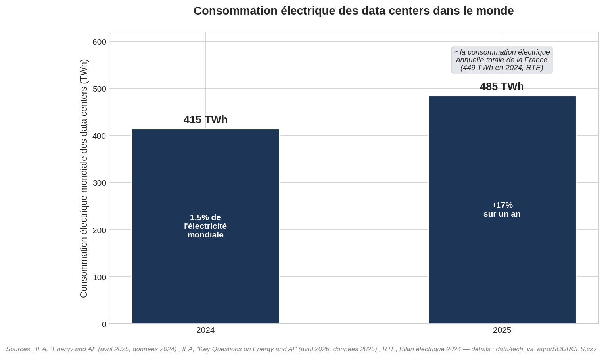
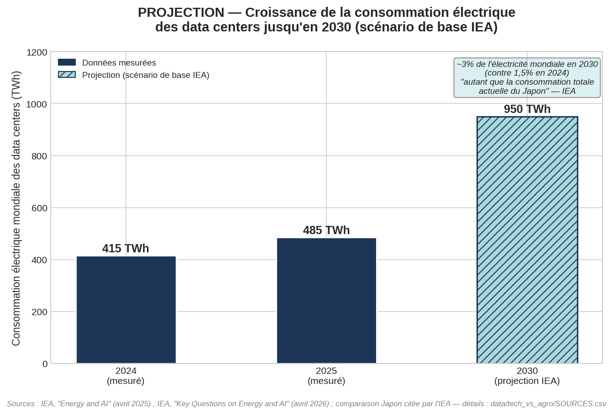

L'empreinte electrique des data centers, chiffres a l'appui
Une premiere version de cette page comparait l'impact du numerique a celui de l'agroalimentaire. Cette comparaison a ete abandonnee : elle mettait face a face deux secteurs aux perimetres tres differents, ce qui n'apportait pas grand-chose. Cette page se concentre desormais uniquement sur ce que le numerique consomme lui-meme.
Perimetre retenu : les data centers uniquement (pas les smartphones, ordinateurs ni reseaux telecom), car c'est le seul perimetre pour lequel des chiffres recents et solides existent. Toutes les donnees viennent de l'Agence Internationale de l'Energie (IEA).
En 2025, les data centers du monde entier ont consomme 485 TWh d'electricite, soit une hausse de 17% en un an. A titre de comparaison, la consommation electrique annuelle totale de la France (menages, industrie, tout compris) etait de 449 TWh en 2024 — un ordre de grandeur comparable, meme si les annees de reference different.

Source : IEA, "Energy and AI" (2025) et "Key Questions on Energy and AI" (2026) ; RTE, Bilan electrique 2024
L'IEA projette une consommation de 950 TWh en 2030 dans son scenario de base, portee notamment par l'intelligence artificielle. L'IEA formule elle-meme la comparaison : ce niveau equivaudrait a la consommation electrique totale actuelle du Japon.

Source : IEA, "Energy and AI" (2025) et "Key Questions on Energy and AI" (2026)
Un graphique sur la consommation d'eau des data centers etait prevu, en s'appuyant notamment sur les travaux de The Shift Project. Il a ete abandonne : le chiffre le plus cite dans la presse ("IEA : 560 milliards de litres en 2023") s'est revele introuvable dans le rapport IEA lui-meme apres verification directe, et une autre source (UNU-INWEH, institut de recherche de l'ONU) donne un chiffre environ 8 fois superieur pour 2030 sans methodologie verifiable. Faute de donnee fiable et non contradictoire, ce graphique n'a pas ete publie.
Le perimetre "data centers" ne couvre pas l'ensemble du numerique (fabrication et usage des terminaux, reseaux telecom), qui represente une part significative de l'empreinte du secteur mais pour laquelle les donnees recentes et fiables sont plus rares.